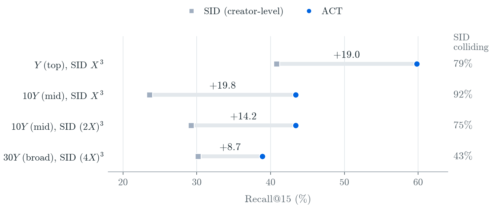
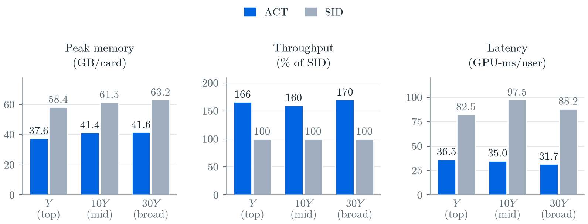
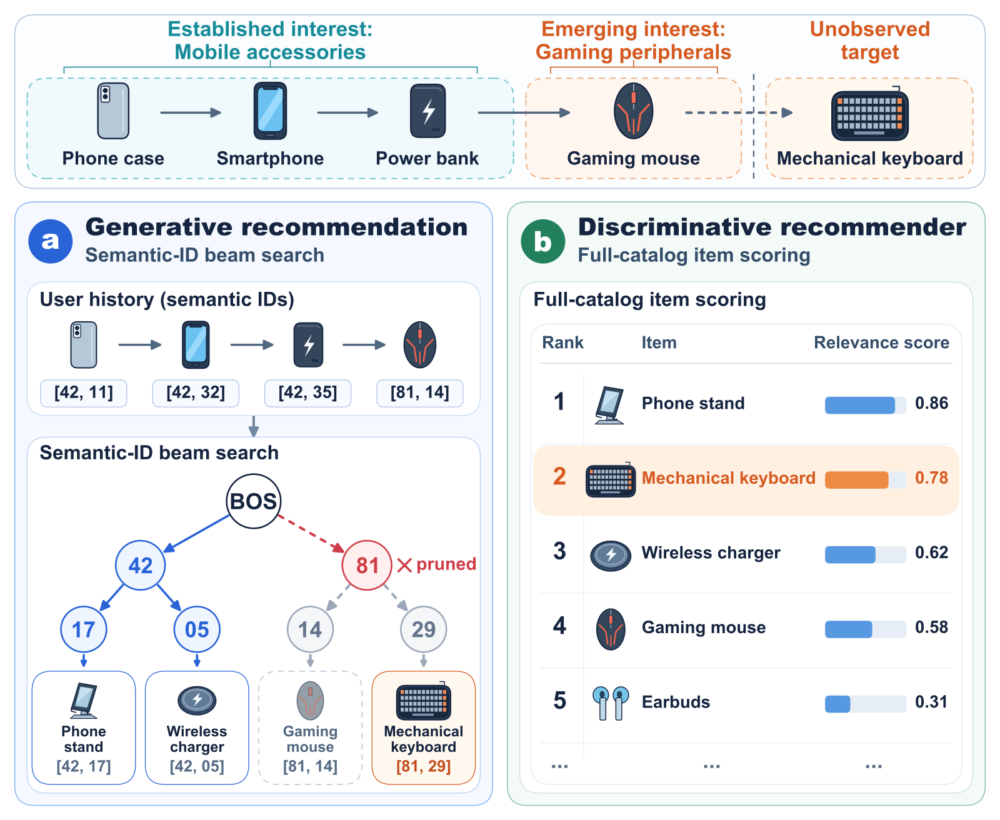
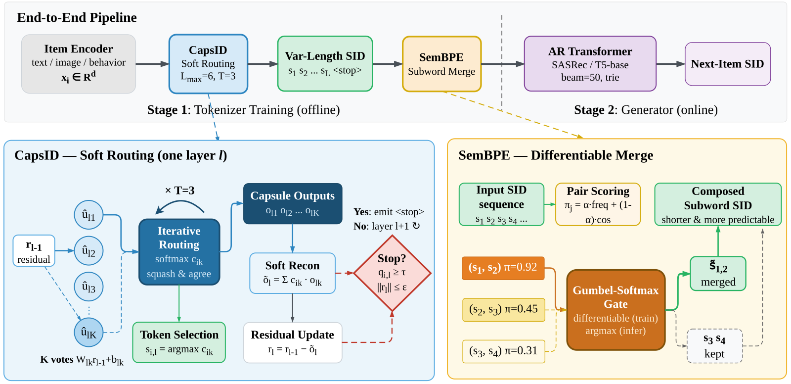

目录 · 9 节
1它到底在解决什么问题？2ACT 怎么做？3实验：只换 token 层会怎样？4撞号到底让 SID 丢了多少？5词表多大合适，什么时候不灵？6线上成本和 A/B7我认为它的局限8一个推荐团队可以怎么试9结论做生成式推荐、正在用 SID 编码物品的团队值得读。Meta 这篇论文给每个创作者在语言模型的词表里单独加一个 token，用它取代 SID。原因很直接：SID 是多对一的编码，好几个创作者会共用同一串 SID，模型即使生成对了 SID，也还得猜用户要的是其中哪一个。论文把这个方法叫 ACT（Atomic Creator Token，每个创作者一个独立 token）。模型一步生成一个创作者 token，直接按概率取前 K 个，不再需要把 SID 展开成创作者再按热度排序。
在 Meta 的创作者推荐数据上，作者只换掉 token 这一层，其余保持一致。前 15 个推荐里命中用户下一个互动创作者的比例从 23.58% 提到 43.41%。在最大的一档候选里，即使把 SID 的码本放大 64 倍，SID 仍比 ACT 低 8.72 个百分点。SID 方案每个用户的推理耗时还约是 ACT 的 2.7 倍。瓶颈在 SID 这一层，而不在语言模型。代价是每个 token 都要有足够的训练样本，所以作者只把 ACT 用在头部创作者上。
它到底在解决什么问题？
任务是给用户推荐他还没关注的创作者。候选是几十万个粉丝数过门槛的头部创作者，用户的历史只有一小串之前对推荐创作者的互动，比如点开、点赞、分享、关注、长时间停留。模型要根据这串历史和用户画像，预测他下一个会互动的创作者。
现在主流的生成式做法照搬 OneRec 和 TIGER。先用一个预训练好的 GNN 给每个创作者算一个 embedding，然后用残差量化把它压成 3 个码，这 3 个码合起来就是这个创作者的 SID。量化器训练好就固定了。之后微调语言模型，让它根据历史生成下一个 SID。
问题出在 SID 的数量比创作者少。很多创作者会分到同一串 SID，论文把这叫撞号。推理时模型用束搜索生成若干个 SID，每个 SID 要展开成它下面的所有创作者，先按束搜索里 SID 的先后，同一 SID 内再按粉丝数排，得到最终列表。下面是一个示意：
| 示意 | SID (12, 7, 3) 下的创作者 | 粉丝数 | 展开后在列表中的位置 |
|---|---|---|---|
| 创作者甲 | 大号 | 500 万 | 第 1 |
| 创作者乙 | 中号 | 80 万 | 第 2 |
| 创作者丙（用户其实想看） | 新号 | 3 万 | 第 3 |
模型生成对了 SID (12, 7, 3)，但如果列表只剩两个位置，用户真正想看的新号丙就被挤出去了。热度排序天然偏向大号，这和推荐新创作者的目标正好相反。
第二个问题在训练上。量化器固定以后，语言模型的训练信号只能传到 SID 的码 token，传不回创作者的 embedding。量化器按 GNN 的相似度分组，语言模型按下一个创作者预测来学，两边各学各的。每来一个新创作者，码本还得重建。
ACT 怎么做？

整体流程分三步：
| 步骤 | 输入 | 做什么 | 产出 |
|---|---|---|---|
| 扩词表 | 全部候选创作者 | 每个创作者在 Llama-3.2-3B 的词表里加一个新 token，和普通词一样有一行 embedding | 一一对应的创作者 token |
| 训练 | 用户画像（文本）+ 历史创作者 token 序列 | 用 LoRA 连同新 token 一起微调，目标是预测下一个创作者 token | 推荐模型 |
| 推理 | 用户画像 + 历史创作者 token | 把所有候选创作者的打分转成概率，取概率最高的 K 个 | 前 K 个创作者，查表即得 |
核心一句话：每个创作者一个 token，撞号和展开排序这一步就消失了，创作者的表示也变成模型参数，可以直接被训练。
为什么一个 token 就够？模型在最后一个位置输出一个隐状态向量 ，每个创作者 有自己的 embedding 行 。创作者 的打分就是两者的点积 ，所有创作者的打分做一次 softmax 就是下一个创作者的概率分布。训练目标是真实下一个创作者的交叉熵。
训练信号怎么回到创作者表示上？同一个创作者 token 在历史里出现时是输入，在预测位置是被打分的输出。下面只看输出打分这一路：交叉熵对某个创作者 embedding 的梯度是 。这里 是模型给创作者 的概率， 是真实的下一个创作者。直觉是：真实创作者的 embedding 被拉向当前隐状态，其他创作者按各自的概率被推开。SID 方案里训练信号只能更新 SID 码 token 的 embedding，传到冻住的 GNN 和码本时梯度为零。
一个能手算的例子（示意）：某次预测时真实创作者的概率是 0.2，它的 embedding 沿 方向更新的系数是 0.2 − 1 = −0.8，梯度下降后它被往 拉近；另一个创作者概率 0.1，系数是 0.1，被往反方向推一点。 Hoot 说

ACT：一人一个可训练的 token
- 真实创作者，概率 0.2（示意）
- 系数 0.2 − 1 = −0.8，被拉向 h
- 另一个创作者，概率 0.1（示意）
- 系数 0.1，被往反方向推一点
- 创作者表示由谁决定
- 推荐目标本身
概率越接近 1，真实创作者被拉动得越少；模型越有把握，更新越小。
SID：创作者先被量化成码
- 训练信号能更新的
- SID 码 token 的 embedding
- GNN embedding 和码本
- 冻住，梯度为 0
- 创作者表示由谁决定
- 预训练 GNN 的相似度
共用一个 SID 的几个创作者拿到同样的码，训练再久也分不开。
表里的概率 0.2 和 0.1 是为演示取的数。系数是负数，这个创作者的 embedding 就被拉向这次预测的隐状态；是正数，就被推开一点。SID 方案里，这一步只更新几个创作者共用的码 token，创作者自己的表示始终不变。 出处: 论文 §2.1、§2.2
主体训练用 LoRA 微调主干，同时训练创作者 embedding，样本是“画像 + 历史 → 下一个创作者”。生产模型在这之前还有一个冻住主干、只更新新 token 的预热步骤，公开数据上的实验不做预热，ACT 照样领先。新 token 默认随机初始化，也可以用 GNN embedding 经过一个线性投影来初始化，但之后照样可训练。新增的参数不多：10Y 个创作者乘 3072 维，bf16 存储约 0.6 GB（Y 是论文用来隐藏真实规模的相对单位）。
作者还试了在 SFT 之后再做后训练。因为创作者是单个 token，DPO、GRPO 等三种后训练方法都能直接在真实的创作者集合上做。三种都没有超过 SFT，所以上线用的是 SFT 模型。
实验：只换 token 层会怎样？
对比要公平，作者让 SID 基线和 ACT 用同一个主干、同样的数据和解码方式，SID 按 OneRec 的做法实现，唯一的差别是 token 层。生产数据按天切分，测试集约 100 万条。候选集分三档，按粉丝门槛从高到低是 Y、10Y、30Y 个创作者，大的一档包含小的一档。
评测要分清两个口径。创作者级召回看真实的下一个创作者在不在最终前 K 个里。SID 的预测要先展开成创作者再算这个数。簇级召回只看生成的 SID 和目标的 SID 是否一样，它会高估 SID 的效果，因为一个 SID 代表好几个创作者。下面的结果都用创作者级召回。
| 10Y 档，基础码本 | SID | ACT | 差距 |
|---|---|---|---|
| Recall@15 | 23.58% | 43.41% | +19.83 点 |
| Recall@50 | 34.33% | 60.27% | +25.94 点 |
| Recall@200 | 47.62% | 79.30% | +31.68 点 |
| NDCG@200（按互动价值加权，见下文） | 0.187 | 0.343 | +83.4% |
从前 15 到前 200，ACT 都明显领先。这说明它的优势不只在很短的列表里。
NDCG@200 按互动价值加权：短暂点开的权重最低，关注的权重最高。这项指标也提高了 83.4%，说明召回的提升同时体现在更看重排序和互动价值的指标上。
撞号到底让 SID 丢了多少？
作者把 SID 的创作者级召回拆成两部分：先要命中 SID（簇级召回），然后这次命中还要在展开、按热度排序并截到前 15 之后保留下来。保留下来的比例记作 ，等于创作者级召回除以簇级召回。它是评测时用两个召回算出来的比值，线上推理不会算它。 为 1 表示命中 SID 就等于命中创作者，越小丢得越多。论文把丢掉的这部分叫撞号税。ACT 没有撞号， 恒为 1。
| 候选规模 | SID 码本 | 每个 SID 平均几个创作者 | ρ | SID R@15 | ACT R@15 |
|---|---|---|---|---|---|
| Y | X³ | 2.35 | 0.61 | 40.81 | 59.80 |
| 10Y | X³ | 3.79 | 0.47 | 23.58 | 43.41 |
| 10Y | (2X)³ | 1.75 | 0.64 | 29.21 | 43.41 |
| 30Y | (4X)³ | 1.37 | 0.74 | 30.15 | 38.87 |
（X 是论文隐藏真实大小的每层码本基准尺寸，X³ 表示 3 层、每层 X 个码。）
在 10Y 档用基础码本时， 只有 0.47。也就是说 SID 命中的簇里，一半以上在展开和按热度截断时丢了。候选从 Y 扩到 10Y，平均撞号数从 2.35 涨到 3.79， 跟着降。SID 在规模变大时吃两次亏：码更难猜，撞号税也更重。ACT 只需要猜对创作者，没有撞号税，所以它的相对优势从 46.5% 扩大到 84.1%。

放大码本能找回一部分。10Y 档每层码数翻倍后，SID 的 R@15 从 23.58% 升到 29.21%，这说明撞号确实是差距的重要来源。但到 30Y 档、码本放大 64 倍，仍有 43.3% 的创作者和别人共用 SID。码本越大撞号越少，但收益越来越小，始终降不到零，因为冻住的 GNN embedding 本身就聚成一团团。这次比较里 SID 只在约 76% 有 GNN embedding 的创作者上评测，ACT 在全部创作者上评测，条件对 SID 更有利，ACT 依然领先 8.72 个点。
作者还比较了 ACT 学到的创作者 embedding 和 GNN 的 embedding，两者大体解耦，只保留了少量局部的近邻关系。ACT 学出的是一套为“下一个创作者”这个任务服务的空间，而不是重新学一遍 GNN 的协同关系。
词表多大合适，什么时候不灵？
词表越大，每次预测越难，但覆盖的互动越多。从 Y 扩到 30Y，目标在词表内时的召回在下降，词表覆盖的互动比例涨得更快，两者相乘得到的有效召回每一档都在上升。所以在头部范围内，词表越大越好，直到每个 token 的数据不够用为止。
公开数据 KuaiRand-27K 上，作者只保留训练点击最多的 5 万个创作者。这时 ACT 的 Recall@15 是 2.763%，SID 是 1.859%，全局热度基线是 2.351%。这说明 ACT 学到了热度以外的东西，而 SID 从 K=10 起就不如直接推热门。
SID 只在 K=1 时略高于 ACT（0.332% 对 0.294%）。这和它在同一个 SID 里优先返回最热门创作者的做法相符，第一名沾了热度的光，列表一长这个优势就没了。
换成更小的 KuaiRand-1K，结论就反过来了。这里同样看 Recall@15，对照的是全局热度和最近互动两个启发式基线里较好的那个。用全部创作者时 ACT 只有 0.75%，较好的启发式基线有 1.76%。只保留头部创作者，ACT 升到 1.86%，仍低于启发式基线的 3.78%。这两种设置下每个创作者 token 平均只有约 5 条和 34 条训练样本，KuaiRand-27K 那组约 331 条。KuaiRand-27K 的总数据量也大得多，所以这组对比给不出一个通用的样本数门槛。它能说明的是：ACT 的收益取决于有多少监督数据，而不是“一人一个 token”本身就能赢。这也是作者把 ACT 定位为头部组件的原因：头部用 ACT，长尾交给传统召回。
线上成本和 A/B

同样 32 张 A100、束宽 15，10Y 档每个用户的推理耗时从 97.5 GPU 毫秒降到 35.0，每张卡峰值显存从 61.5 GB 降到 41.4 GB，并发吞吐是 SID 的 160%。原因是 SID 每生成一个候选 SID 要输出 5 个 token（开始符、3 个码、结束符），之后才展开成创作者，每条束都要多走几步解码、多存几份 KV cache。ACT 只生成 1 个 token，多出来的只是更宽的一次 softmax。
线上 A/B 里，ACT 组分别对照带 SID 的线上版本和经典线上排序。线上指标是脱敏的，分成两个整体消费指标、一个产品消费指标和一个产品互动指标。产品互动指标涨幅最大，相对带 SID 的版本 +0.29%，相对经典版本 +0.66%（p≈0.05，接近显著）。其余三个消费类指标只涨了 0.01% 到 0.11%。这说明离线召回的提升在线上方向一致，但幅度不大，作者也只把它当方向性证据。
消融里，在束宽 200 下，GNN 初始化比随机初始化的 R@15 高 0.75 个点（43.91% 到 44.66%），加对比学习损失反而全面下降。上线用的是更简单的随机初始化版本。
我认为它的局限
第一，线上证据偏弱。四个指标方向都为正，但只有产品互动对经典排序的 +0.66% 接近显著（p≈0.05），对带 SID 的线上版本只有 +0.29%。
第二，ACT 依赖充足的监督数据。KuaiRand-1K 上每个 token 平均约 5 到 34 条样本时，ACT 连简单的启发式基线都赢不了（1.86% 对 3.78%）。所以监督稀疏的长尾物品只能交给常规召回，ACT 管不了全量。
第三，词表越大，输出层的 softmax 越宽。论文的头部规模在几十万个创作者这个量级，物品数到数百万时，推理成本和每个 token 的样本量都会变成新的约束。
一个推荐团队可以怎么试
- 先挑头部物品：按训练样本数排序，只取每个物品至少有几百条样本的那部分，确认它们覆盖了多大比例的互动。这一步决定 ACT 能管多大范围。
- 在已有的 SID 生成式模型上做对照：主干、数据、解码都不动，只把 SID 换成一物一 token，同时报告创作者级召回和簇级召回，并算出 。 很低就说明撞号在拖后腿。
- 先用随机初始化和纯 SFT，不加对比损失和后训练。论文里这些附加项都没带来收益，先用最简单的版本看差距。
- 把 ACT 接到现有召回的头部路由，长尾仍走原来的召回，线上看高价值互动指标，并对照推理耗时和显存。
结论
对头部物品，与其不断加大码本去缓解撞号，不如直接给每个物品一个 token，让推荐目标的梯度直接训练物品表示。
| 维度 | 评价 |
|---|---|
| 问题重要性 | 高。SID 撞号是所有基于量化编码的生成式推荐都会遇到的问题 |
| 方法创新性 | 中。一物一 token 是老想法，贡献在于受控对比和撞号税的拆解 |
| 实验证据 | 中高。离线对照很干净，公开数据给出了失效条件；线上只有方向性结果 |
| 工程成本 | 低到中。只是扩词表加 LoRA 微调，推理反而更省 |
| 是否值得尝试 | 值得，前提是头部物品样本足够，并保留长尾召回 |
读完这篇，你觉得
夜读鸮记下了，谢谢你的反馈。
点一下即可，无需登录；再点一次撤回。只统计匿名次数，不记录你是谁。
相关论文RELATED

Generative · 2026-10-26From Item Scores to Semantic Tokens: Test-Time Collaborative Adaptation for Generative Recommendation用 Semantic ID 做生成式推荐时，模型要逐个 token 生成商品编码，束搜索每一步只留下分数最高的几条前缀，一条前缀被剪掉，它下面的所有商品就再也生成不出来。用户刚冒出新兴趣时，这个问题最明显。这篇论文提出 TCBSA（测试时协同束搜索调整），在每次剪枝之前，把打分模型给出的商品分数折算成对编码前缀的加分：打分模型先给全库商品打分，取排名靠前的几百件，把每件商品高出入围线的分差摊到它编码经过的每一步上；束搜索每一步排序前，把这些加分加到路径的累计分数上。两个模型都不重新训练。在不同公开数据集上，给 TIGER 加上它之后，排序准确率 NDCG@10 相对提高 4.9% 到 30.4%；用更窄的束，它也比把 TIGER 的束开宽更准、更快。 Generative · 2026-10-29REGER: Modeling inter-item Relations with Semantic IDs for Generative Recommendation交叉熵只告诉生成式推荐正确 token 是哪个，其他候选谁更好没有任何信号。电子科大的 REGER 把传统序列模型对全部物品的打分，在正确答案的每个前缀上按下一个 token 所属的分叉把物品概率加总再归一化，得到每一步的分叉偏好，让生成模型去对齐。单独加到 TIGER 上，Beauty 数据集的 Recall@10 从 0.0673 提到 0.0794，推理时间不变，说明它是一个几乎免费的训练改动。
Generative · 2026-10-29REGER: Modeling inter-item Relations with Semantic IDs for Generative Recommendation交叉熵只告诉生成式推荐正确 token 是哪个，其他候选谁更好没有任何信号。电子科大的 REGER 把传统序列模型对全部物品的打分，在正确答案的每个前缀上按下一个 token 所属的分叉把物品概率加总再归一化，得到每一步的分叉偏好，让生成模型去对齐。单独加到 TIGER 上，Beauty 数据集的 Recall@10 从 0.0673 提到 0.0794，推理时间不变，说明它是一个几乎免费的训练改动。 Generative · 2026-10-28MuSID-KD: Multigranularity Knowledge Distillation for Generative Recommendation with Semantic IDs把 SID 生成式推荐模型蒸馏成小模型时，通常只让学生对齐教师在最终推荐物品上的概率分布。华东师大的 MuSID-KD（一种按 SID 层级做多粒度蒸馏的方法）发现这样不够：只对齐物品分布的学生，在 SID 中间层给候选组排出的先后，平均有 53.8% 的比较和教师不一致。教师的知识不只在最后一层的物品概率里，也在每一层前缀的排序里。在三个 Amazon 数据集上，它的 NDCG@10 比基础蒸馏平均高 8.31%，线上推理结构完全不变。
Generative · 2026-10-28MuSID-KD: Multigranularity Knowledge Distillation for Generative Recommendation with Semantic IDs把 SID 生成式推荐模型蒸馏成小模型时，通常只让学生对齐教师在最终推荐物品上的概率分布。华东师大的 MuSID-KD（一种按 SID 层级做多粒度蒸馏的方法）发现这样不够：只对齐物品分布的学生，在 SID 中间层给候选组排出的先后，平均有 53.8% 的比较和教师不一致。教师的知识不只在最后一层的物品概率里，也在每一层前缀的排序里。在三个 Amazon 数据集上，它的 NDCG@10 比基础蒸馏平均高 8.31%，线上推理结构完全不变。 Generative · 2026-10-28PinGER: Token-Efficient Generative Retrieval with Semantic IDs生成式召回把每个物品编成多层 SID 逐层生成，代价是输入侧每个历史物品要占好几个 token。Pinterest 的 PinGER 在训练时给每个物品的 SID 后面再放一个稠密向量 token，并规定任何 token 读取别的物品时只能看它的稠密 token，不能看它的 SID。于是服务时可以丢掉历史里的全部 SID，每个物品只占 1 个 token，结果不变。它把输入压缩做成了训练时的结构约束。离线上它用 170 个 token 达到 TIGER 用 1,024 个 token 的召回率，在 Related Pins 上线后保存数提升 0.62%。
Generative · 2026-10-28PinGER: Token-Efficient Generative Retrieval with Semantic IDs生成式召回把每个物品编成多层 SID 逐层生成，代价是输入侧每个历史物品要占好几个 token。Pinterest 的 PinGER 在训练时给每个物品的 SID 后面再放一个稠密向量 token，并规定任何 token 读取别的物品时只能看它的稠密 token，不能看它的 SID。于是服务时可以丢掉历史里的全部 SID，每个物品只占 1 个 token，结果不变。它把输入压缩做成了训练时的结构约束。离线上它用 170 个 token 达到 TIGER 用 1,024 个 token 的召回率，在 Related Pins 上线后保存数提升 0.62%。
Generative · 2026-05-08CapsID: Soft-Routed Variable-Length Semantic IDs for Generative Recommendation生成式推荐把物品编成一串离散编号，常见的残差量化每层只认最近的一个码，跨类别的物品会丢信息。CapsID 让物品按权重分给几个候选码，残差减去这几个码的加权重建，把握够高就提前停，所以编号长短不一。在亚马逊 Beauty 上，Recall@10 从 0.0770 提到 0.0839；工业数据上召回和带稠密向量的方案持平，延迟约为后者一半。
讨论
欢迎补充实验细节、复现经验或不同看法。需 GitHub 登录。
正在加载讨论…